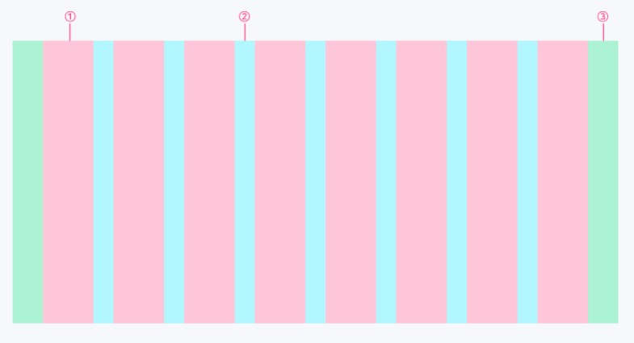

HTML 그리드 시스템
그리드 시스템
그리드 시스템(Grid System)이란, 페이지 콘텐츠를 논리적이고 일관성 있는 질서와 구조로 디자인할 수 있도록 돕는 그래픽 시스템을 말합니다. 여기서 그리드(Grid)는 사전적 의미로 '격자무늬' 또는 '격자판'을 의미하며, 디자이너는 격자 선에 맞춰 디자인에 규칙을 부여하여 페이지를 더 보기 좋고, 알기 쉽게 제작하는 데 도움이 됩니다. 웹 디자인에서 그리드 시스템은 페이지의 디자인 영역을 나누고, 각 영역에 디자인 요소를 배치하는 데 사용됩니다. 그리드 시스템은 웹 디자인에 있어 아래와 같은 긍정적인 역할을 합니다.
- 컬럼 단위로 요소를 구성하므로 많은 양의 콘텐츠도 정돈된 느낌을 준다.
- 격자 형식에 따르므로 블록을 쌓듯 디자인이 편리하다.
- 일관되고 통일성 있는 아름다운 웹 디자인이 가능하다.
웹디자인에서의 그리드 시스템
그리드 시스템의 기본 요소
그리드는 칼럼(Column), 거터(Gutter), 마진(Margin) 세 가지 요소로 구성됩니다.
- 1. 칼럼(Columns)
실제로 컨텐츠를 포함하는 부분은 칼럼이라고 합니다. 칼럼의 넓이는 고정된 값으로 제공되며, 1개 이상의 칼럼이 조합하여 컨텐츠의 크기를 결정합니다. 그리고 하나의 칼럼 안에는 반드시 양 옆에 여백, 즉 거터를 동반합니다./li> - 2. 거터(Gutters)
거터는 칼럼과 칼럼사이의 공간입니다. 1개 이상의 칼럼이 조합된 컨텐츠와 컨텐츠 사이의 간격이 됩니다. 거터의 넓이 역시 고정 값으로 제공하며, 스크린의 너비에 비례하여 넓은 거터는 큰 스크린에 적합니다. 칼럼사이에 공백을 더 많이 생성하기 때문입니다. - 3. 마진(Margins)
여백은 내용과 화면의 왼쪽 및 오른쪽 가장자리 사이의 공간입니다. 여백 너비의 넓이도 고정 값으로 정의되며, 여백 역시 큰 여백은 내용의 둘레에 더 많은 공백을 만들기 때문에 큰 스크린에 적합니다.